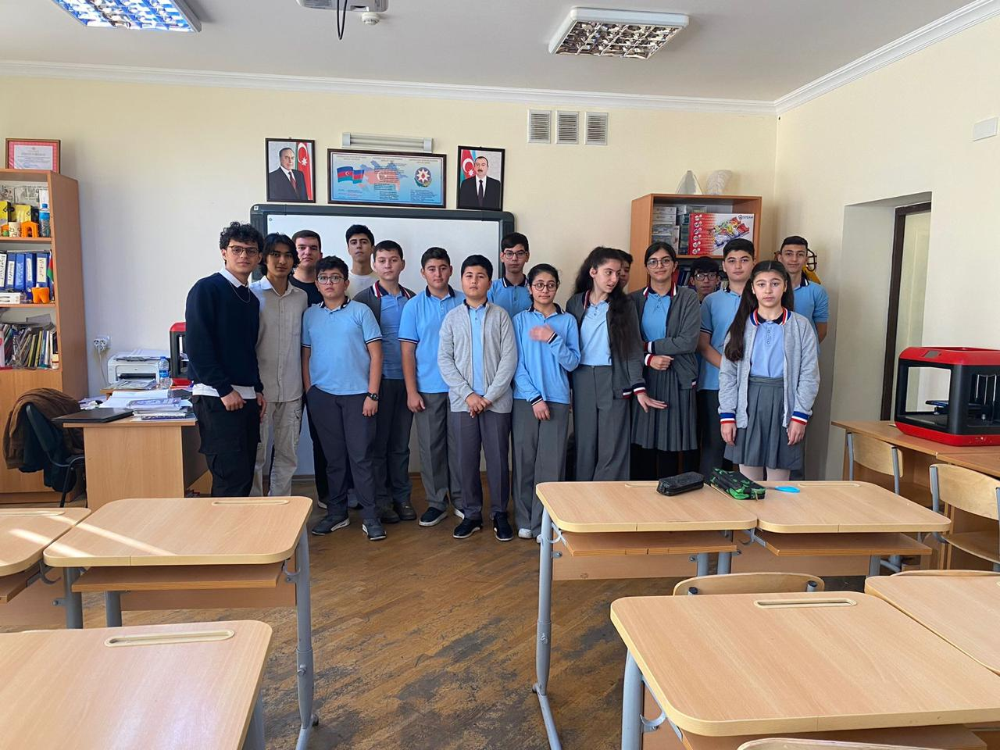

Web Madridistas
Team 29

In this project, the students in the ADA IT department had to plan an Hour of Code event for a school in Azerbaijan. Accordingly, on November 1, 2023, we, the members of team 29(Web Madritistas), went to Baku Secondary School No. 72, which is situated in Baku City's Sabunchu neighborhood. Twenty eighth graders made up the class for which we were able to organize our Hour of Code event. Nevertheless, seven class members chose not to appear in the pictures we shot of the occasion.
Firstly, we chose to use engaging slideshows to make the event much more interesting for the students to keep their attention on the concepts we were teaching to them. Thus, we started our Hour of Code event with a slideshow about ADA university. In these slides, we talked about all the opportunities and advantages ADA university can provide to them in their studies and their future career plans by highlighting the experienced and comprehensive accademical staff of ADA university, all the exchange programs and Erasmus programs. Then, at the end of this section, we answered their questions about the ways that they can get admitted to our university with or without scholarship.
After this section, we began our Hour of Code section. First, we started explaining how we were able to make piece of metal(computers) to do all the complex actions we want them to do and faciliate our lives. Which, we believe, made students intersted on the topic. Then, we went on to explain what is machine language, what all the 1s and 0s mean that they see in their school classes and how we are able to turn machine language into something that is understandable by people using programming languages. Thus, after that we defined what is coding and what coders do. Then, we clarified some of the coding notions such as loops, conditional statements, and functions. And, at the end, we used Classic Maze Puzzle from Code. org to parctice students the coding concepts we had taught them during the Hour of Code event using the commputers that school itself had provided for us.